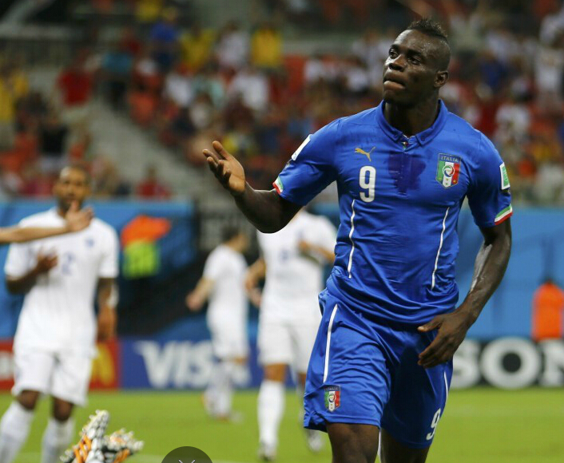
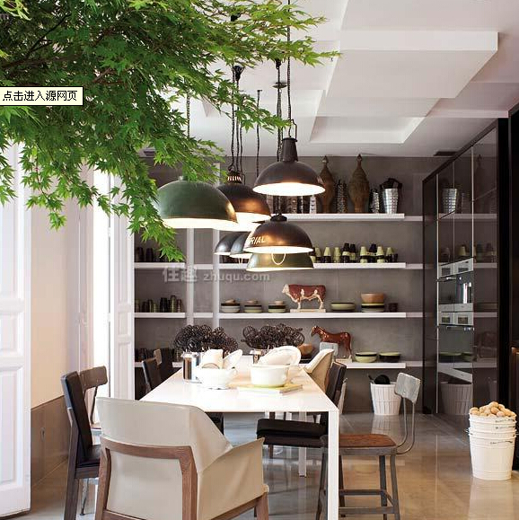

为巴神拟头条
巴神第一脚就好漂亮，注定这场比赛会张开翅膀，成精的睡皮，掌控着整个球队的灵魂，伟大的三狮军团，呆梨加油！...
父亲如天，遮挡风雨；父亲如地，浇灌希望
父亲节，顾名思义是感恩父亲的节日。约始于二十世纪初，起源于美国，现已广泛流传于世界各地，节日日期因地域而存在差异...

简约风格家居
简约主义的本质就是取消外表多余的浮华以显露家原本的特性，由简单的形象或符号来构筑空间；在结构上，简化结构体系，精简结构构件，讲究结构逻辑，使之产生没有屏障，或屏障极少的建筑空间。...